❤
Moya Barida is turning 23
Music
TULUS — JATUH SUKA
I hope all your dreams come true, that you’re always surrounded by good people, that your education goes smoothly, and that one by one, everything on your wish list becomes reality. May all the good things in life always find their way to you.
I think that love was something scary. But since I’ve been with you, I’ve realized that love can actually feel this beautiful and this happy. Thank you for coming into my life, for always caring about me, for never getting tired of reminding me to take care of my health, and for patiently correcting me when I’m wrong.
I’m truly grateful to know you. Let’s take good care of this relationship and face whatever comes our way together in the future.
❤❤❤
— Esa Akbar Febrian —
Sinopsis
Prolog
Chapter 1 : Gadis Cantik Itu Bernama Moya Barida
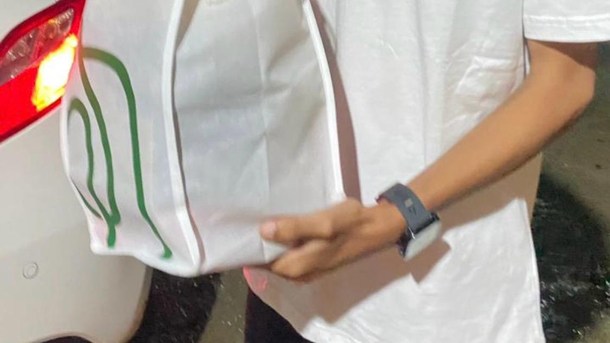
01 Januari 2026 — Malam yang penuh keajaiban.
Chapter 2 : Boneka Pilihan Esa, Boneka Beruang Putih Pertama Moya Barida
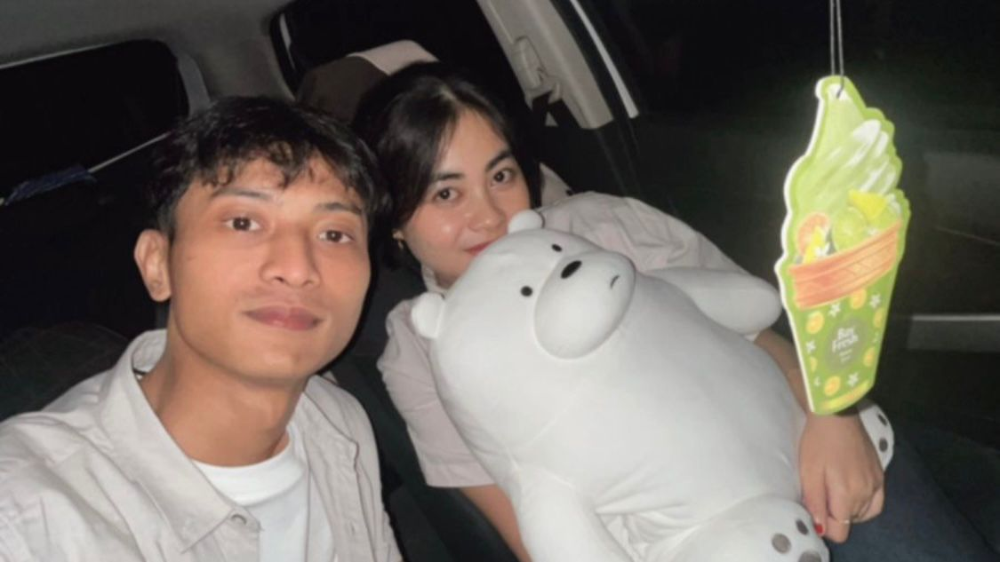
Momen di AEON — Boneka beruang putih pertama.
Chapter 3 : Antara Hari-Hariku, Ada Moya Barida
Chapter 4 : Kerak Telor dan Bunga untuk Moya Barida
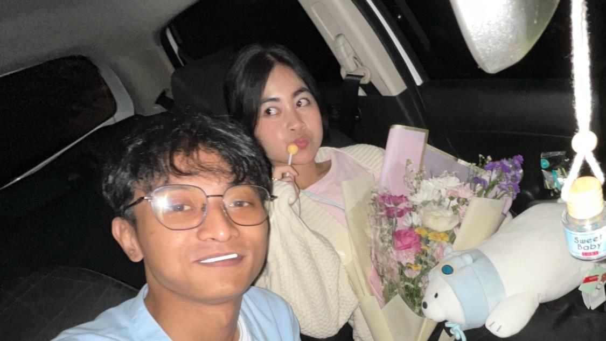
Taman Sehati — Malam dengan kerak telor
Chapter 5 : Tentang Moya Barida dan Kesalahpahaman Kedua
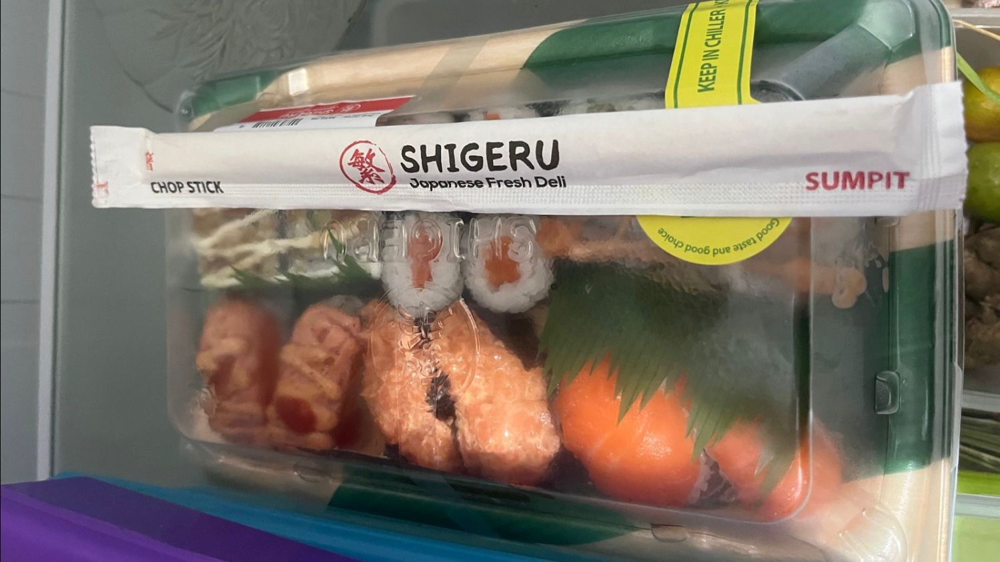
Notifikasi favorit — Yang ingin terus aku jaga.
Chapter 6 : Moya Barida di Hari Ulang Tahunku
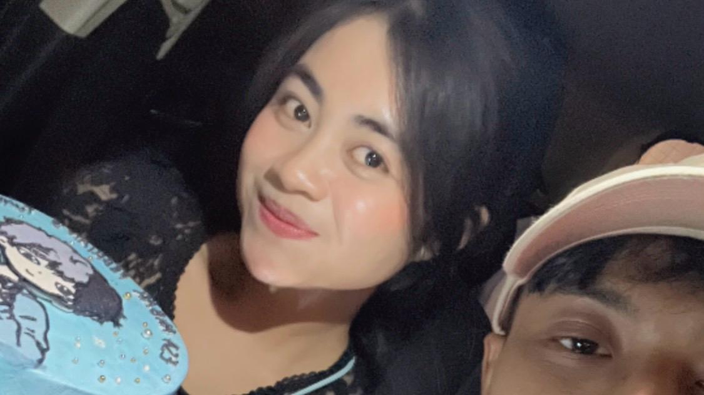
14 Februari 2026 — Saat aku merasa benar-benar dirayakan.
Chapter 7 : Tentang Rencanaku di Hari Ulang Tahun ke-23 Moya Barida
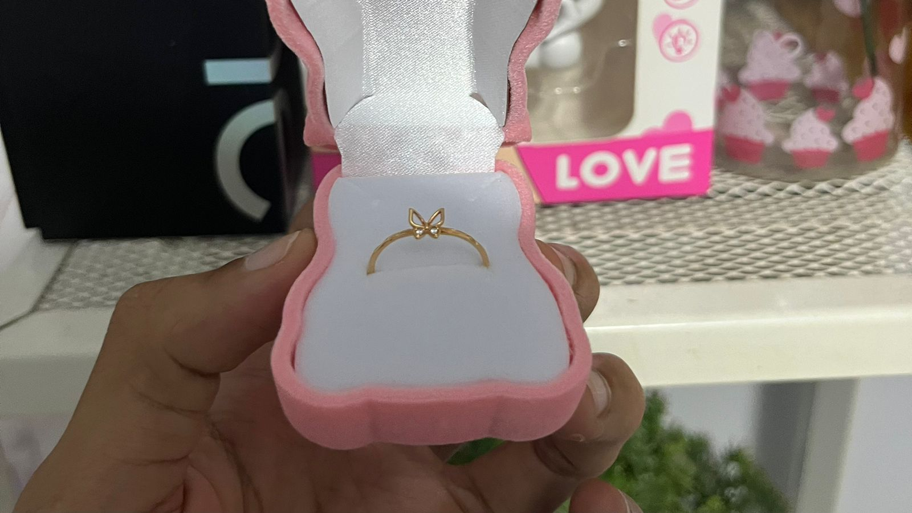
11 Maret 2026 Komitmen di jari manis.
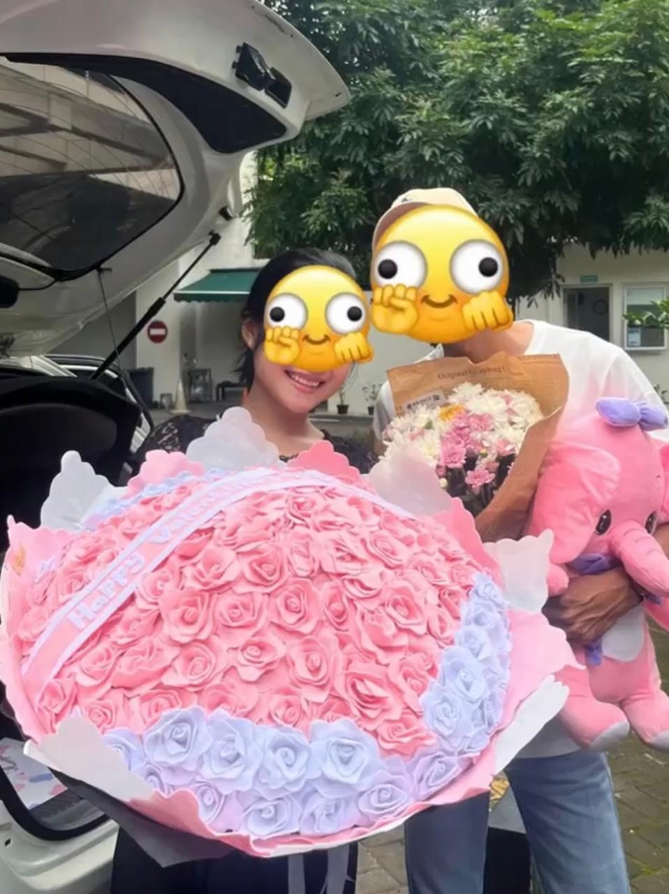
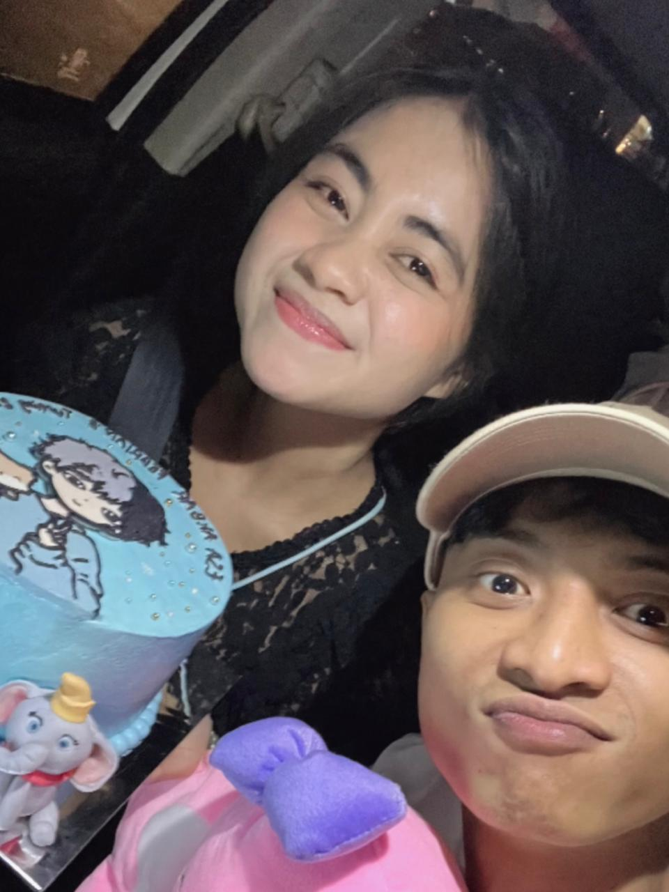

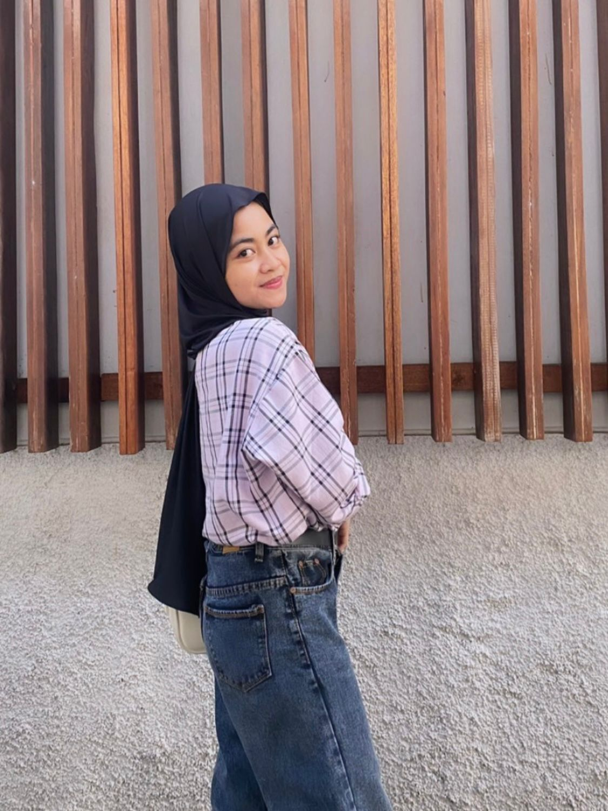
Chapter 10
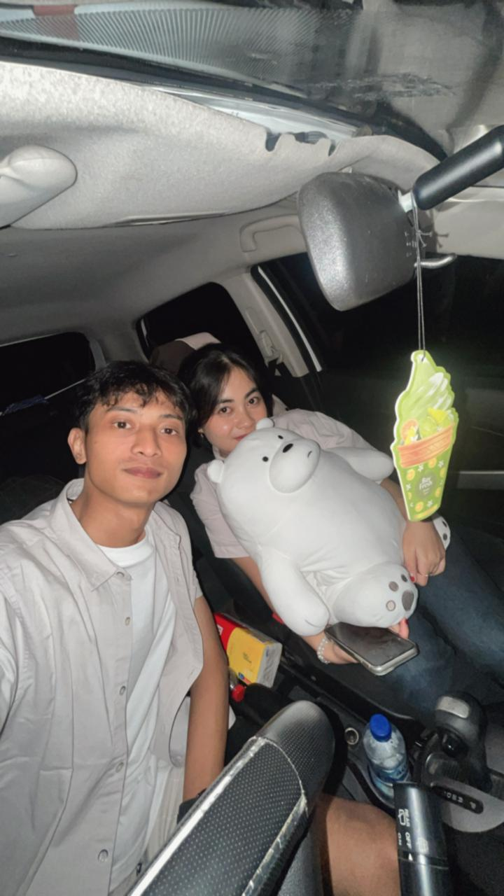
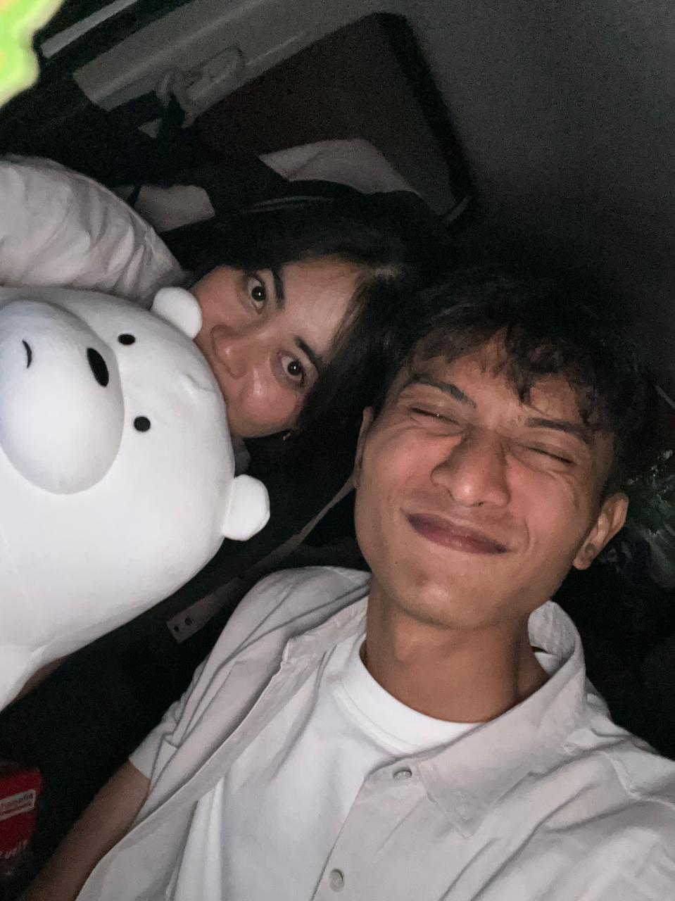
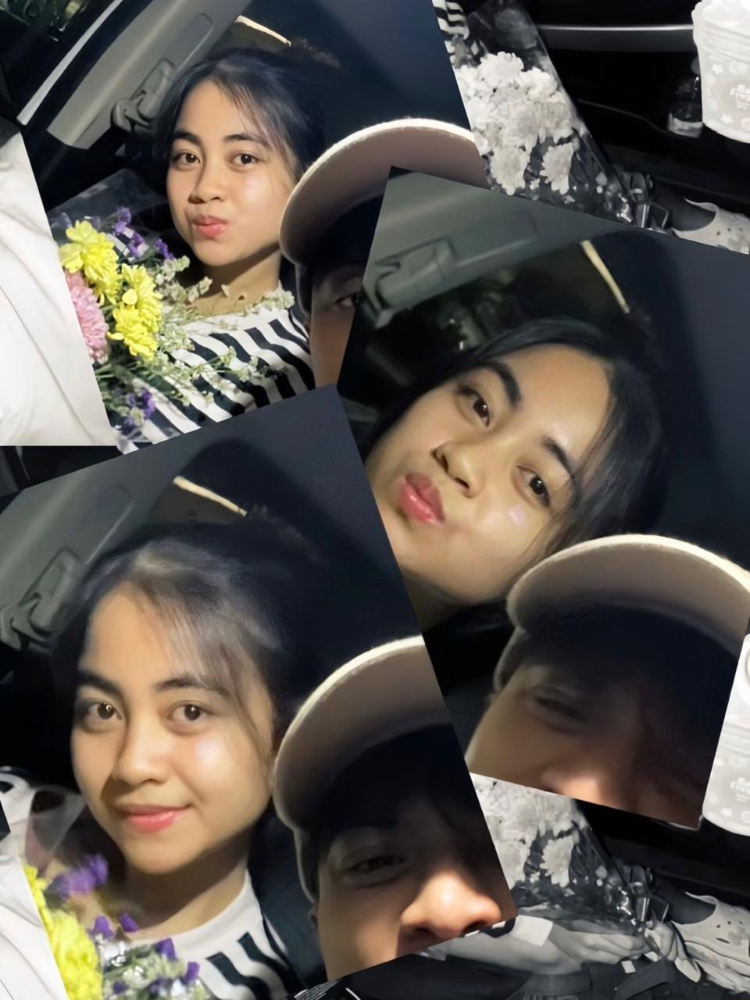
Yeyyyy Official
— ESA AKBAR FEBRIAN —
1 / 14
WRITTEN BY ESA AKBAR FEBRIAN
Tentang pertemuan singkat di masa SMP, dan waktu yang mempertemukan kembali.